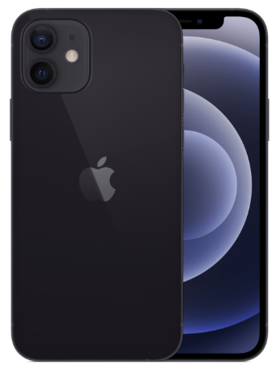
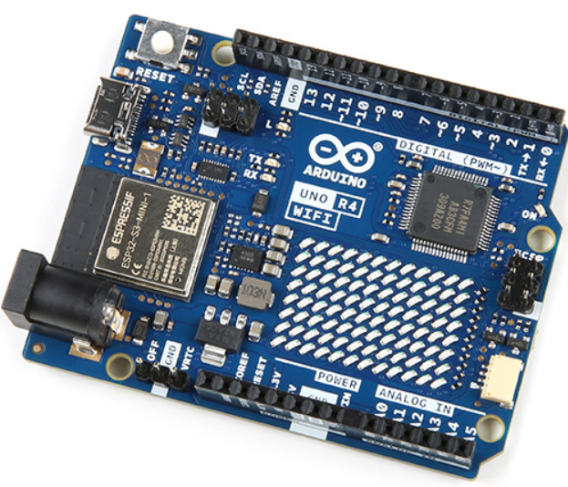
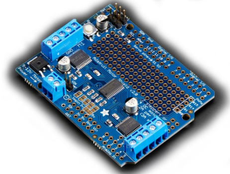
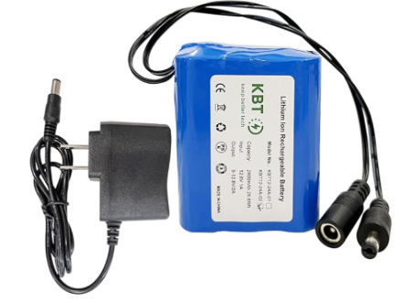
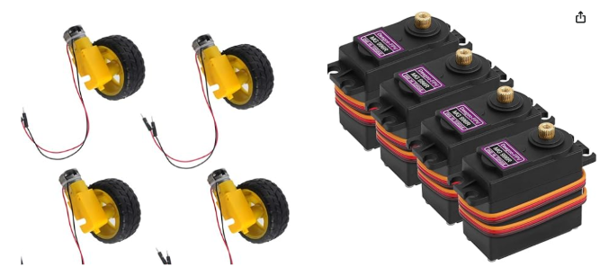
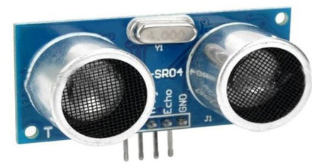
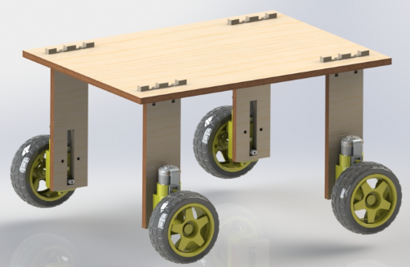
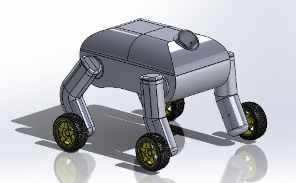

Data and energy flow diagram
Software
Repo: https://github.com/karismoon/spot-dog
The software for the robotic dog is a lightweight, single-page web application that acts as the primary interface for voice-command control. It leverages modern web technologies to recognize keywords via the browser’s Speech Recognition API and sends commands directly to the Arduino R4 through HTTP requests.
Website Development
Design and Features:
The website is a single-page application designed to be intuitive and responsive. It includes:
- Keyword Recognition: A speech-to-text feature powered by the Web Speech API (specifically, SpeechRecognition).
- Command Execution: Recognized keywords are matched against a predefined command set and sent to the robotic dog via HTTP requests.
- Status Indicators: The page dynamically updates the recognition status (e.g., “Listening” or “Not Listening”) and displays the last recognized keyword.
- HTML: For structuring the content.
- CSS: For styling the page, ensuring a clean and modern look.
- JavaScript: For implementing the voice recognition and HTTP command logic.
The website uses the SpeechRecognition API to listen for user input. It recognizes predefined keywords such as forward, sit, lay, and paw. Once a keyword is recognized, it is mapped to a corresponding HTTP command and sent to the Arduino R4’s web server.
Server Hosting on Arduino R4:
The Arduino R4 operates as a web server, hosting an endpoint for each command. These endpoints are accessed by the webpage via HTTP GET requests. For example:
- Command /forward: Moves the robot forward.
- Command /sit: Executes the sitting gesture.
External Dependencies
The webpage relies on the following built-in browser features:
- SpeechRecognition API: Enables voice-to-text conversion.
- Fetch API: Sends HTTP requests to the Arduino R4.
Source Code
The complete source code for the webpage and the Arduino R4 firmware is available on GitHub.
Deployment Instructions
Arduino R4 Setup
- Load the firmware onto the Arduino R4 and ensure the web server is running.
- Connect the Arduino R4 to the same network as the device accessing the webpage. (We used a phone hotspot to ensure a 2.4G connection).
- The webpage can be opened locally on any device (given the device is on the same network) with a modern web browser.
- Open the webpage in a browser.
- Click "Start Listening" and speak a command (e.g., "forward" or "sit").
- Observe the robotic dog’s response to ensure proper execution.
Firmware
Repo: https://github.com/karismoon/spot-dog
The firmware is designed to manage the various components of the system, which includes controlling DC motors, servos, and a relay while enabling WiFi-based remote communication. The central microcontroller used for this system is an Arduino R4, which acts as the main processing unit and supports wireless functionality.
System Initialization:
Upon startup, the firmware initializes all components, including needed Digital/Analog pins, I2C communication, servo motors, and WiFi connectivity.
-
GPIO Setup:
The relay is connected to GPIO2, configured as an output. The relay is initially set to HIGH, ensuring the connected device is off at startup. - I2C Setup:
The Adafruit Motor Shield, connected via I2C, is initialized to control up to four DC motors. The Adafruit_MotorShield library handles the communication. -
Servo Setup:
Five servos are connected to specific pins (0–4) and are initialized to their default positions using the Servo library. Each servo corresponds to a specific movement or component of the robotic system. -
WiFi Setup:
The Arduino connects to a predefined WiFi network using the SSID and password. Once connected, the IP address is displayed via serial, and an HTTP server is started to handle remote commands.
The firmware includes a web server running on port 80 to handle HTTP GET requests.
-
Client Communication:
Incoming HTTP requests are parsed to extract commands. Based on the URL, corresponding functions are called to control motors, servos, or the relay. -
Command Examples:
- /on: Move forward.
- /off: Stop movement.
- /backward: Move backward.
- /left or /right: Turn in the specified direction.
- /sit, /lay, /nod, etc.: Execute predefined servo movements for robotic behaviors.
The firmware controls four DC motors connected to the Adafruit Motor Shield.
-
Direction and Speed Control:
Each motor can run forward or backward using the run(FORWARD) and run(BACKWARD) commands. The speed is adjusted using the setSpeed() function, which takes a value between 0 and 255. -
Combined Movements:
Motors are controlled in coordination to achieve various movements such as forward motion, backward motion, or turning.
Five servo motors control various robotic parts, including limbs and a neck mechanism.
-
Default Positions:
The stand() and neck() functions set servos to their default positions (e.g., 90°). -
Predefined Movements:
Functions like sit(), paw(), hail(), and nod() control servos to perform specific actions. These functions use for-loops to gradually change servo angles, ensuring smooth movements.
The heel() function uses the WiFi signal strength (RSSI) to determine proximity to the user. If the signal is weaker than a specified threshold, the system moves forward until the desired proximity is achieved.
Main Loop and Event Handling:
The loop() function continuously runs the webServer() function to listen for and respond to incoming commands.
-
Polling and Timeout:
The firmware continuously checks for connected clients. If no data is received within a predefined timeout, the client connection is closed. -
Dynamic Response:
Commands from the server trigger corresponding actions, such as adjusting motor speeds or executing servo movements.

Electrical
Overall Design:
The circuit contains various sensors to respond to external stimuli and motors to control movement. Primarily, we take input via voice commands (data taken through an iPhone and sent via server to the arduino) and via the HC-SR04 ultrasonic sensor. These data inputs control a combination of the ten motors spread throughout the body of SuperSpot. The full data flow and power diagram can be seen below.
Let's look at the various components of this system individually as we travel through the path of a voice command.

Component 1: Mobile Phone
For our project, we primarily used Sam’s phone for this purpose. When the arduino was powered on, it would constantly search for the hotspot powered by a mobile phone and connect to it. This is because our arduino requires a 2.4G connection rather than the standard 5G connection on most modern routers. Once connected, the arduino would host a virtual server that would listen for different server endpoints. On our iPhone, we would run a voice recognition program designed in HTML that would then send those endpoints as commands were given.

Component 2: Arduino R4 with Wifi and Bluetooth.
Our arduino is the brains of the system. It connects to wifi, hosts a server that listens for commands sent from the phone, and controls the rest of the system accordingly. It directly controls the HR-SC04 sensor and the six servo motors. It also interfaces with the motor shield to control the other four gear motors used for the wheels.

Component 3: Adafruit Motor Shield
The Adafruit Motor Shield is responsible for controlling the gear motors that drive the wheels. It simplifies the process of managing multiple DC motors by providing an easy interface for the Arduino. The shield supports up to four DC motors or two stepper motors and integrates seamlessly with the Arduino via an I2C connection. In our project, we used the motor shield to control the four gear motors powering the wheels, allowing us to adjust speed, direction, and movement precision. The shield also includes built-in motor drivers, making it possible to handle higher power outputs while protecting the Arduino from overcurrent.

Component 4: Rechargeable Battery:
Our rechargeable battery is a 12v lithium ion battery capable of outputting up to 1A. It directly powered the motor shield and arduino with a 12v connection, but was stepped down to 5v to provide power to the stepper motors.

Component 5: Motors
We used two different types of motors:
Gear motors (left): The gear motors powered the wheels of SuperSpot, providing mobility. These DC motors interfaced directly with the motor shield for easy control.
Stepper motors (right): The stepper motors powered the shoulder, neck, and jaw joints of SuperSpot. They were powered by a 5v connection from the battery and controlled through the digital pins of the arduino.

Component 6: HC-SR04 Ultrasonic Sensor
The HC-SR04 ultrasonic sensor was mounted on the front of Superspot and interfaced directly with the arduino: it was powered by the 5v pin, and the trig and echo pins were connected to the analog pins. It was used as the “eyes” of SuperSpot, allowing it to sense the ball, as well as other obstacles, depending on the voice command given.
The full circuit, mess and all, is shown below:
Mechanical
Overview:
The mechanical components of SuperSpot can be divided up into 5 parts: legs, body, head/neck, jaw, and the ball. These components were all iterated on thoroughly during our sprints and integrated together to create the final design of SuperSpot.
Brief sprint goals:

Sprint 1:
Our goal for Sprint 1 was to create a simple skeleton of the dog body/chassis that would allow us to test electrical components and motors. This skeleton was constructed out of ¼” fiberboard, with each “leg” secured to a central base via T-nut joints. We attached a DC motor and wheel to the end of each wooden leg to act as the feet of the dog, activating the ability for the base to be mobile.

Sprint 2:
During sprint 2, we started the journey of developing a body and legs that actually resembled a dog. After testing our motors in sprint 1, we decided to order new DC motors due to poor motor performance, and this helped SuperSpot start to drive faster and straighter! We started modeling prototypes of individual leg casings and a central torso that would hold most components. This sprint taught us the strength of filleting parts due to some failed 3D printed leg casings and the importance of time management/collaboration.
Sprint 3 is where everything started coming together! In this sprint, we refined and then integrated several individually developed systems and components of our dog.
The legs of SuperSpot were specifically designed to achieve the following goals:
- Protect and house the motors controlling the feet
- Allow for movement and geometry to enact commands such as sit, lay down, and paw
- Securely attach to the main body via shoulder joints
These legs were designed at a 30 degree angle. This allows the shoulder joints to move the back legs forwards geometrically so that SuperSpot can be in a seated position without interfering with the front legs.
Additionally, each leg casing has small holes at the base of the shoulder to allow for wires to travel from the motors of the feet into the torso, where it gets powered.
We looked into purchasing better motors, but there were some constraints. The sprint 1 design uses four motors (one for each leg) with a right-angle gearbox. The gearbox transmits power perpendicular to the orientation of the motor. This was very convenient because we could directly drive the wheels and the profile fit well in the anticipated form factor of the dog leg.
The new motors needed to be right-angle motors in order to fit our design, which severely limited our options. Higher end motors with the right-angle gearbox – especially those geared for torque over speed – ran upwards of $15 apiece. All four motors together would cost $70-$80 with shipping. Given our limited budget these prices were prohibitive.
We considered several alternative designs such as driving the legs jointly (which would reduce the number of motors needed), indirectly driving the legs (to allow for more flexibility in mounting and the type of motor), using small motors, designing our own gearboxes, and more. Unfortunately, none of the alternatives were especially viable with our space, budget, time restrictions, and priorities.
We settled on buying new versions of the same motors. The original motors we used were a couple of years old, so we anticipated improved performance from brand new motors of the same model. The new motors did improve the reliability and performance of SuperSpot. However, being relatively cheap and of the same model, they did share some of the issues of the original motors.
The leg casings taught us about designing with 3D printing in mind. The initial prints of the leg casings failed. Parts of the print detached because the thin walls were not appropriately connected to one another. In addition, the thin walls of the casing introduced warping and made it difficult to align the two halves of the casing properly. On the second iteration we filleted several connections for added strength which worked very well. Additionally, on the first round of prints we figured out the optimal orientation of the part for printing, so we modified the design to avoid needless supports. Designing with our method of manufacturing in mind was a very valuable lesson. It also emphasized the importance of time management and collaboration to allow smooth handling of hiccups.
Body:
The torso of SuperSpot houses all of the electrical components , including:
- Arduino Uno R4 + (3?) motor shields, directing power to all of the motors and servos
- 5 MG996R Servos that control all 4 legs at the shoulder joint, and one that controls the neck
- An ultrasonic distance sensor to allow it to detect the ball
- 12V rechargeable lithium battery
The 4 servos that served as shoulder joints were important for SuperSpot to be able to complete some of the voice commands, such as sit, lay down, or paw. Each servo was attached to the side of the torso and the ends of the legs were securely screwed into the shaft of the servo, actuating the movement of the entire leg. The base of the neck is stationed at the center of the torso, driven by another servo. This allowed SuperSpot to follow commands such as nodding or to pick up the ball.
The neck of the dog was designed to be both lightweight and functional, allowing for efficient wiring between the head and the body. It consists of a cylindrical structure that connects to the head, tapering into a flat prism to optimize space within the body. Mounted to stands attached to the bottom of the body, the neck rotates from the center of the torso, maintaining a consistent distance from the front chest for more natural movement. To complement this, the head is positioned at an angle that ensures it moves naturally as the neck rotates. The 3D model of the head is based on a real dog’s anatomy, yet it was designed geometrically to align with the body’s aesthetic and functional complexity. It houses a mini servo, precisely aligned with the jaw's rotation axis, enabling controlled movement. Additionally, the head is equipped with magnets, allowing it to pick up a ball, further enhancing the robot’s interaction capabilities.
Jaw:
- Designed to be light, shaped so that it could rotate 35 degrees freely along the jaw hinge, driven by a mini servo in the dog head.
- Changed design to be flatter and less L shaped for improved mobility
- Changed to be flat on button for better grip / clamping
Ball:
Audrey: I designed and fabricated the ball for the dog to play fetch with. The ball had the following constraints:
- Must be able to be thrown
- Must be able to right itself such that the toy lands in the same position each time it is thrown
- Must be able to be picked up by SuperSpot
Fig. 1: Dog ball model 1 CAD assembly
(pictured with dimpled plastic material render for realism)
Fig. 2: Dog ball model 1 CAD assembly
with hidden lines visible. Here it is apparent
how the two halves of the ball are affixed with carefully toleranced slots.
Fig. 3: Bottom half of dog ball model 1
(pictured with dimpled plastic material render for realism)
Fig. 4: Top half of dog ball model 1
(pictured with dimpled plastic material render for realism)
- Needs to align with the new jaw angle (23.5 degrees)
- Due to the orientation of how the dog’s head is attached to the neck, the angle is no longer parallel to the ground
- Must be small enough to fit inside the jaw (44mm)
- Must be small enough such that the jaw did not hit the ball in it’s most downright position (41mm)
Fig. 5: Dog ball model 2 CAD assembly
(rendered with dimpled plastic material for realism)
Fig. 6: Bottom half of dog ball model 2 (pictured with dimpled plastic render)
Fig. 7: Top half of dog ball model 2 (pictured with dimpled plastic render)
Fig. 8: Assembly of dog ball model 2 (hidden lines visible to show toleranced slotting)
Model 2 of the dog ball was printed. It was then I realized I had made a fatal error. While I’d assumed it was best to ensure the ball would not obstruct the jaw in its most downright position (41mm), that came at the cost of arguably the most important criteria for the ball: it needs to be tall enough to be detected by the ultrasonic sensor (60mm) in order to execute the fetch algorithm. So, I made a valiant effort to reprint the ball scaled 135%. I made the rather unfortunate discovery that there was not a single SD card or SD card reader not corrupted in the entire print farm. Our team made the collective decision to use the first model of the ball for demo day.